3. Getting Started 1: Example Project
This section provides a brief demonstration of executing a fully prepared DTOcean simulation. The zip file containing the example files used for this exercise can be downloaded from the dtocean-examples GitHub repository. Unzip the archive to your preferred location.
3.1. Open the Project
The first step is to open the “RM3_10_example.dtox” file. Start DTOcean and use the “Open” button from the main toolbar to open the file, as shown in Fig. 3.1.
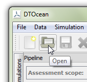
Fig. 3.1 Left-click the “Open” button
Locate and select the file using the file dialogue and click the “Open” button. The “pipeline” dock should now populate with variables, all of which except one will have green (satisfied) or blue (optional) indicators as seen in Fig. 3.2.
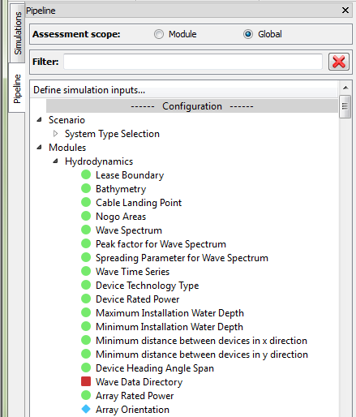
Fig. 3.2 The “Pipeline” dock showing the status of variables
3.2. Add Wave Device Model Data
The only variable not satisfied in the example is the “Wave Data Directory”. This variable provides the path to the wave device model data generated by the “WEC Simulator” pre-processing tool. The output folder for the RM3 device is included alongside the example “.dtox” file, so we simply need to set the path to its location.
Firstly, select the “Wave Data Directory” variable in the “Modules->Hydrodynamics” branch of the “Configuration” section of the pipeline, as shown in Fig. 3.3. The main window will now contain a text field for entering the path, as seen in Fig. 3.4. If the text field is not visible then ensure that the “data context” is selected in the main toolbar, as in Fig. 3.5.
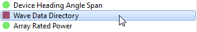
Fig. 3.3 Left-click the “Wave Data Directory” variable
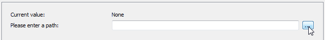
Fig. 3.4 Text field for entering the folder path
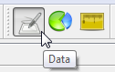
Fig. 3.5 The “data context” is used for entering input data and viewing results
Click the “…” button, seen in Fig. 3.4, to open a file dialogue and select the “RM3 Model Data” folder contained in the example archive. Finally, you must click the “OK” button at the bottom of the window, shown in Fig. 3.6, to add the chosen path to the variable. The variable’s indicator will now change to a green circle.
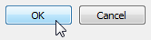
Fig. 3.6 The “OK” button must be clicked to add data to a variable
3.3. Add an Execution Strategy
DTOcean divides the design of an OEC array into distinct stages which are computed by “modules”. Modules can be run individually or using an “execution strategy” which allows more advanced usage, such as conducting sensitivity studies. The most basic execution strategy runs all of the modules in a simulation in a single action and we will now select this strategy. To begin, click the “Select Strategy” button in the main toolbar, as shown in Fig. 3.7.
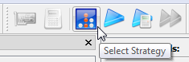
Fig. 3.7 Left-click the “Select Strategy” button
The “Strategy Manager” dialogue will now open, which is used to select and configure execution strategies. As shown in Fig. 3.8, select “Basic” from the “Available strategies” list and then click “Apply” as shown in Fig. 3.9.
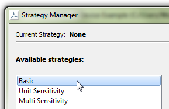
Fig. 3.8 Select the “Basic” strategy from the list of available strategies
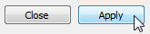
Fig. 3.9 Left-click the “Apply” button
The current execution strategy should now be displayed at the top of the strategy manager, as seen in Fig. 3.10. The Basic strategy requires no configuration, so click the “Close” button to leave the dialogue.
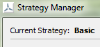
Fig. 3.10 The current execution strategy is displayed at the top of the dialogue
3.4. Execute the Simulation
The simulation is now ready to be executed. As an execution strategy has been applied we need to click the “Run Strategy” button from the main toolbar, as seen in Fig. 3.11.
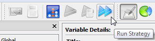
Fig. 3.11 Left-click the “Run Strategy” button
A dialogue now opens which informs us if any required variables have not yet been set. At this stage, all required variables should be satisfied, so the dialogue will return “PASSED”, as seen in Fig. 3.12.
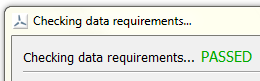
Fig. 3.12 All required variables have been satisfied
Clicking “OK” in the dialogue will start the execution of the simulation. If you want to go back, for any reason, click “Cancel”. Once the simulation has started the user interface will not be accessible until the strategy has completed or failed. An indicator shows that the simulation is still computing, as shown in Fig. 3.13. The “System” dock, at the bottom the user-interface, will show any logging information sent from the modules. The simulation will require about 30 minutes to complete.
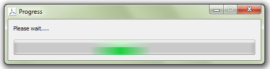
Fig. 3.13 The progress bar is shown while the strategy is being executed
3.5. Inspect the Results
Once the simulation has been executed (and no errors have been encountered) the pipeline dock will close the configuration branches and populate the results branches. To examine the LCOE for the array, click the “Most Likely Levelised Cost of Energy” variable in the “Assessment->Economics” branch of the “Results” section of the pipeline, as shown in Fig. 3.14 (you will need to scroll down to find it).
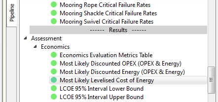
Fig. 3.14 Left-click the “Most Likely Levelised Cost of Energy” variable
Assuming that the data context is selected, the value will appear in the main window. It should be around 1.13 Euro\kWh, although it can vary slightly due to the statistical method used for its calculation.
DTOcean provides a number of default (based on data type) and customised plots for visualising inputs and results. As an example, let’s look at the cable layout designed by the electrical sub-sytems module. First, find the “Cable Route Data” variable in the “Modules->Electrical Sub-Sytems” branch of the results section of the pipeline, as shown in Fig. 3.15.
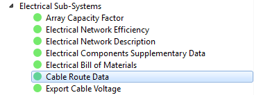
Fig. 3.15 Left-click the “Cable Route Data” variable
The main section of the interface will now show the table of raw data which describes the cable routes. To view the plot, the interface must be switched to the “plots context” by clicking the button in the main toolbar, as shown in Fig. 3.16.

Fig. 3.16 The “plots context” is used for viewing plots
The main window should now show the custom plot of the electrical cable layout, as seen in Fig. 3.17, which also shows other array features such as the devices and lease area. You may need to maximise the DTOcean window, or close the System dock to see the plot clearly.
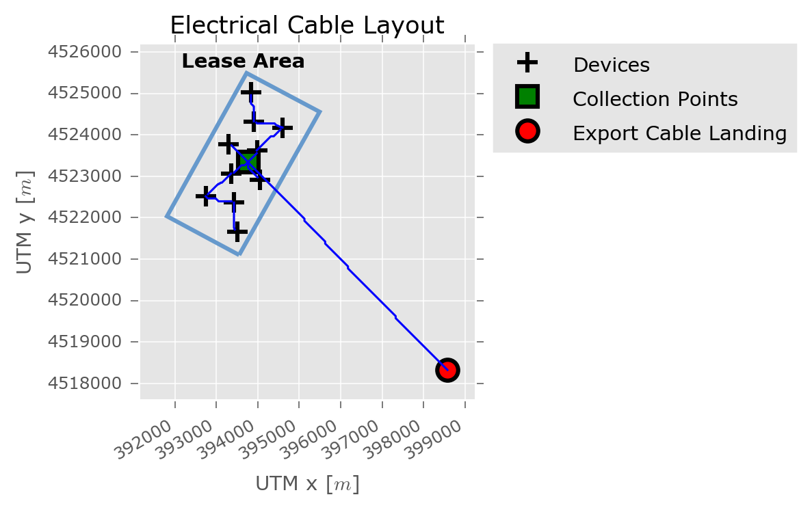
Fig. 3.17 Plot of the electrical cable routes and related array features
3.6. Change the Assessment Scope
DTOcean applies “assessments” to the results of each design module, which calculates metrics such as the levelised cost of energy (LCOE). The assessments are calculated over two scopes, “global” and “module”. The global scope carries out the assessment for all results produced so far in the simulation, whilst the module scope only uses the results generated by the last executed module [1]. The difference can be illustrated by observing the “CAPEX (Excluding Externalities)” variable. This is found in the “Assessment->Economics” branch of the “Results” section of the pipeline, as shown in Fig. 3.18.
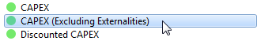
Fig. 3.18 Left-click the “CAPEX (Excluding Externalities)” variable
Switching back to the data context, a value of about 30 million Euro should be visible in the main window. Now use the radio button at the top of the pipeline, shown in Fig. 3.19, to switch to the module assessment scope. Because the last executed module was Operations and Maintenance, and the contribution to the CAPEX from maintenance is zero, the CAPEX (Excluding Externalities) variable will now also be zero.
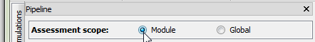
Fig. 3.19 Use the radio button to switch to the “Module” assessment scope
3.7. View Results Evolution
Visualising how results evolved over the course of a simulation is another useful feature of DTOcean. We can “inspect” the state of all variables following the execution of any module. First, switch back to the global scope, as shown in Fig. 3.20. Now, right click on one of the “Modules->Mooring and Foundations” branches, in the Configuration or Results section, to bring up the context menu and click the “Inspect” command, as shown in Fig. 3.21. The Inspect command operates the same way for a branch in the Configuration or Results section of the pipeline.
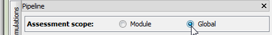
Fig. 3.20 Use the radio button to switch to the “Global” assessment scope
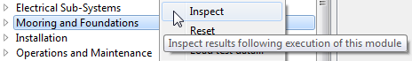
Fig. 3.21 Right-click the “Mooring and Foundations” branch and choose “Inspect” from the context menu
The variables are now displaying their state following execution of the Mooring and Foundations module. Selecting the “CAPEX (Excluding Externalities)” variable again, the value shown should be about 28 million Euro. As expected, this is less than the final CAPEX, as the value does not include the cost of installation.
Before moving onto the next section, select “Inspect” on the “Operations and Maintenance” module, to show the results in their final state once more.
3.8. Clone and Re-Execute
DTOcean contains advanced memory management features that make it easy to clone, alter, re-execute and compare simulations. Execution strategies may also create clones of simulations. To demonstrate this functionality, we will clone the default simulation, modify the preferred foundation type of the devices, and then re-execute.
To begin, switch to the “Simulations” dock, by clicking the tab in the top left corner of the interface, as shown in Fig. 3.22. The simulations dock should now be shown, containing the “Default” simulation. Create a clone of this simulation by right-clicking and selecting “Clone” from the menu, as shown in Fig. 3.23.
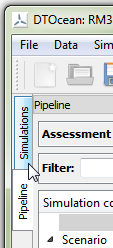
Fig. 3.22 Left-click the “Simulations” tab
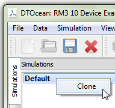
Fig. 3.23 Right-click the “Default” simulation and select “Clone”
A second simulation will appear in the list of simulations. You can rename simulations at any time by double-clicking on the simulation and entering the new name. Note, simulations can not currently be deleted or re-ordered. Return to the pipeline dock (by left-clicking the “Pipeline” tab). We are going to move the state of our new simulation back to prior to execution of the mooring and foundation module. To do this, right-click on the “Modules->Mooring and Foundations” branch in the “Configuration” section of the pipeline and select “Reset”, as shown in Fig. 3.24. Always take care when using the “Reset” command as all results from the chosen module onwards will be deleted.
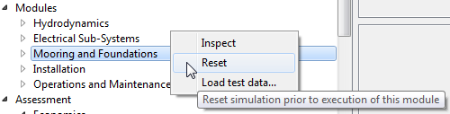
Fig. 3.24 Right-click the “Mooring and Foundations” branch and choose “Reset” from the context menu
Expand the Mooring and Foundations branch and find the “Preferred Foundations Type” variable. Ensuring that the data context is active, use the drop-down box in the main window to select “Gravity” and then click the “OK” button. The current value shown should now update to “Gravity”, as shown in Fig. 3.25.
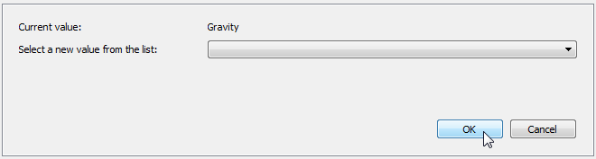
Fig. 3.25 Set the “Preferred Foundations Type” variable to “Gravity”
The cloned simulation is now ready to be executed, so click the “Run Strategy” button again (as shown in Fig. 3.11) and the simulation will create new results from the mooring and foundations module onwards.
3.9. Compare Results
By using the simulation and pipeline docks in unison, it’s easy to compare results from different simulations. Once the cloned simulation is completed, select the Simulations dock and then drag it to a position above the Pipeline dock, as shown in Fig. 3.26, so that both docks can be seen together.
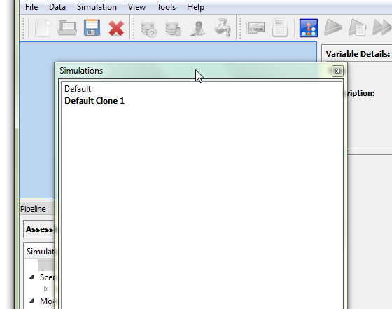
Fig. 3.26 Drag the Simulation dock to a position above the Pipeline dock
Now, in the pipeline, find the “CAPEX (Excluding Externalities)” output variable again and select it, ensuring that the data context is active (see Fig. 3.5. Using the simulation dock, click on each simulation in turn and watch the value in the main window update. The same functionality can be used for all other variables and plots and for any number of simulations.
Further insight can be gained by using the “comparisons context”, which can be activated by clicking the “Comparisons” button in the toolbar, as shown in Fig. 3.27.
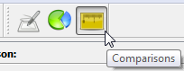
Fig. 3.27 The “comparisons context” is used for comparing simulations
In the “Module Comparison” window, ensure that the “Mode” is set the “Plot” and then start typing “CAPEX (Excluding Externalities)” into the “Variable” field. Select the variable from the list that will appear below the search box. The correct setup is shown in Fig. 3.28. When ready click the “OK” button and a plot will appear showing the recorded CAPEX following each module for the two different simulations.
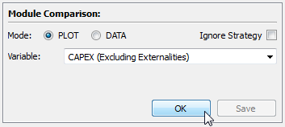
Fig. 3.28 The “Module Comparison” window, ready to plot for the “CAPEX (Excluding Externalities)” variable
The differences between the simulations are even clearer when comparing using the Module assessment scope (the Change the Assessment Scope section describes how to change the scope). Drawing the comparison plot again, with the module scope selected, produces a plot similar to Fig. 3.29. Here, it can be seen that not only does the CAPEX increase following the Mooring and Foundations module, but also the cost of installation is greater.

Fig. 3.29 Module comparison plot using the “Module” assessment scope
3.10. Finishing Up
DTOcean projects can be easily saved to file. To avoid overwriting the tutorial file, chose “Save As…” from the “File” menu, as shown in Fig. 3.30. Use the file dialogue to save the project to a path of your choosing.
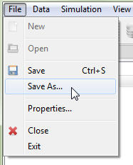
Fig. 3.30 Left click “Save As…” to save the project to a new file
Footnotes